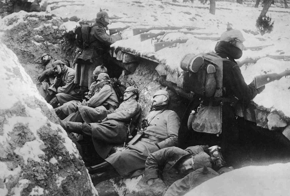

Nel 1916 l’SPD si spaccò, i socialdemocratici che non sostenevano la guerra (i cosiddetti “indipendenti”) formarono l’USPD accusando i socialdemocratici maggioritari di aver tradito il socialismo sostenendo il Kaiser. Le posizioni dell’USPD erano prive di una critica autentica all’imperialismo e si basavano unicamente su un pacifismo centrista e privo di appelli al proletariato affinché si opponesse attivamente alla guerra. Queste posizioni più nette furono assunte da gruppi più piccoli fuoriusciti dall’SPD già nel 1914. Uno dei gruppi più importanti fu quello della “Sinistra di Brema” raggruppato attorno alle figure di Johann Knief e Paul Fröhlich. Tutte queste formazioni erano sulla posizione bolscevica della trasformazione della guerra imperialista in guerra civile, presentata da Lenin alla conferenza di Zimmerwald nel 1915 dove tutti questi gruppi si unirono per formare i Socialisti Internazionali Tedeschi (ISD). Nel novembre del 1918, mese della rivoluzione, l’ISD si fuse con il gruppo dei Radicali di Sinistra di Amburgo e con la Sinistra di Dresda capeggiata da Otto Rühle, formando così i Comunisti Internazionali Tedeschi (IKD). L’influenza dei comunisti internazionali era ancora limitata e il raggruppamento poteva contare su scarse radici nella classe operaia.
La rivoluzione in Germania: un'analisi reale (parte prima)
Lotta Spartaco è certamente un nome che riflette un’eredità politica che ha radice nei movimenti di classe rivoluzionari che hanno attraversato la storia del movimento reale proletario, per questa ragione presenteremo la rivoluzione tedesca come tema del primo articolo della rubrica storica. Il 9 novembre 1918, a un anno e due giorni dopo la rivoluzione operaia in Russia, abdicò il Kaiser a seguito della rivoluzione dei consigli iniziata con l’ammutinamento di Kiel. La rivoluzione tedesca, su cui i bolscevichi avevano contato per trasformare la rivoluzione d’Ottobre in una rivoluzione mondiale proletaria, era apparentemente iniziata: nella realtà dei fatti la situazione era molto più complessa. A settembre Ludendorff, all’epoca dittatore di fatto della Germania, annunciò al Kaiser che l’offensiva iniziata qualche mese prima era stata arrestata e che l’esercito era in ritirata. Il tema per la borghesia monopolistica tedesca era come uscire da una guerra (in quanto sconfitti) con il minimo dei danni. Fu così che nella ricerca di una “pace democratica”, il regime imperiale consultò i leader della SPD: il partito socialdemocratico maggioritario che già nel 1914 appoggiò la guerra imperialista votando a favore dei crediti di guerra.
L’organizzazione più nota era quella Spartachista, denominata “Gruppo internazionale”, di Rosa Luxemburg e di Karl Liebknecht. Per quanto critici di fronte a tutta la socialdemocrazia, gli spartachisti non riuscirono ad abbandonare l’SPD e nel 1916 aderirono nelle fila del nuovo partito socialdemocratico indipendente, sebbene mantenendo una piattaforma politica separata: il *Junius Pamphlet* della Luxemburg, base programmatica della Lega di Spartaco, conteneva una critica eccellente nei confronti dei maggioritari ma era ancora scritto nell’ottica di poter cambiare la socialdemocrazia. La Luxemburg, temendo di operare una rottura definitiva con il partito di massa, rallentò il processo di formazione di un’unica organizzazione proletaria internazionalista capace di potersi radicare nel proletariato tedesco con posizioni rivoluzionarie. La posizione con cui gli spartachisti giustificavano la loro permanenza nell’USPD consisteva nella conquista dei suoi membri più rivoluzionari in funzione di una futura scissione inevitabile, accadde però l’esatto contrario dato che in quanto membri della centrista USPD, la Lega di Spartaco non si schierò a favore delle posizioni di Lenin e degli altri gruppi tedeschi di cui abbiamo parlato prima alla conferenza di Zimmerwald. Con la Lega di Spartaco seppellita all’interno dell’USPD, rifiutando qualsiasi tentativo di separarsi urgentemente da essa fondendosi con i gruppi di sinistra più piccoli (con cui avevano principalmente soltanto delle differenze tattiche), la situazione rimase stagnante negli anni della guerra e non si arrivò alla formazione di una organizzazione rivoluzionaria indipendente dalla socialdemocrazia capace di potersi muovere con efficacia nella lotta all’imperialismo.